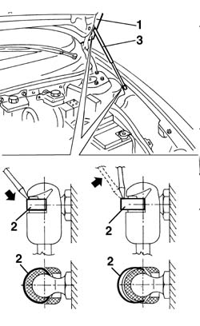

7025A66 l/h or r/h bonnet lid support damper (one) - r+r
- Path
- Procedures > 70 FITTINGS > 7025 COMPARTMENT LIDS > 7025A bonnet lid > 7025A66 l/h or r/h bonnet lid support damper (one) - r+r
- Kind
- repair procedure (removal / refitting; the operation number is the code)
- Applies to
- all engines; all production periods
- Interactive page
- https://sloeber94.github.io/elrnDB-a156/en/#/3238730
Applies to: all engines; all production periods
 Removing
Removing
 Refitting
Refitting1. Lift up the bonnet lid and support it.
2. Using a screwdriver, prise off (without detaching) the retaining clips on both sides.
3. Remove the telescopic strut.

Applies to: all engines; all production periods
Refitting
RemovingCheck that the telescopic strut is undamaged.
Refit the telescopic strut, press-fitting the ends of the anchoring pins.
Fit the retaining clips on both ends.
Check that the telescopic strut works properly.